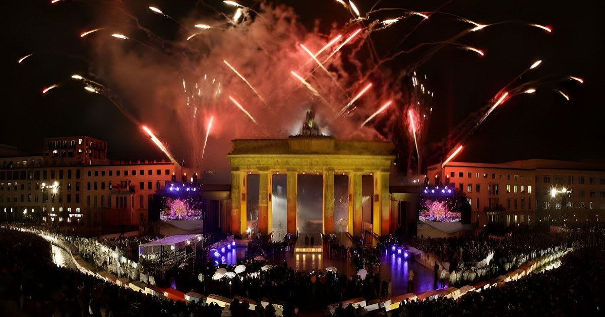

Samedi 3 octobre 2026, pour le 36e anniversaire de la réunification, la Ville libre hanséatique de Brême a accueilli la cérémonie centrale de la fête de l'unité allemande, placée sous la devise « Viele Stärken – ein Land » (« Beaucoup de forces, un seul pays »). Devant le chancelier Friedrich Merz, la présidente du Bundestag Julia Klöckner et la quasi-totalité des ministres-présidents, le président fédéral Frank-Walter Steinmeier a rappelé que la « première révolution pacifique pour la liberté et la démocratie en Allemagne » ne se défend pas toute seule, avant de conclure que « l'Allemagne est un bon pays » qu'il faut préserver. Dans la rue, plusieurs centaines de milliers de visiteurs étaient attendus pour trois jours de fête populaire, sous un important dispositif de sécurité.
La fête de l'unité n'a pas de ville fixe : elle revient chaque année au Land qui préside le Bundesrat, la chambre des Länder. En 2026, c'est donc Brême, le plus petit des seize Länder, dont le bourgmestre-président Andreas Bovenschulte (SPD) préside la chambre, qui accueille les festivités. Il transmettra le relais à Hendrik Wüst, ministre-président de Rhénanie-du-Nord–Westphalie : l'édition 2027 se tiendra à Düsseldorf.
Le choix du 3 octobre doit beaucoup à l'histoire. C'est ce jour de 1990 que la RDA a adhéré à la République fédérale, et la Volkskammer, le Parlement est-allemand, avait fixé cette date par un vote des 22 et 23 août 1990. Le 9 novembre, jour de la chute du Mur en 1989, avait été écarté parce qu'il est aussi l'anniversaire des pogroms antijuifs de 1938. Le 3 octobre a remplacé le 17 juin, jour de commémoration du soulèvement de 1953 en RDA que la République fédérale célébrait depuis 1954.
| Acteur | Rôle dans la journée |
|---|---|
| Frank-Walter Steinmeier | Président fédéral, orateur principal de la cérémonie ; alerte sur l'extrémisme et appelle au renouveau |
| Andreas Bovenschulte | Bourgmestre-président de Brême (SPD) et président du Bundesrat, hôte de la fête |
| Friedrich Merz | Chancelier fédéral (CDU), présent à la cérémonie avec son épouse |
| Julia Klöckner | Présidente du Bundestag (CDU), présente avec les autres organes constitutionnels |
| Hendrik Wüst | Ministre-président de Rhénanie-du-Nord–Westphalie (CDU), reçoit le relais pour 2027 |
Les représentants des organes constitutionnels signent le livre d'or de l'hôtel de ville, puis un office œcuménique est célébré à la cathédrale Saint-Pierre (Dom St. Petri), avec les prêches du président de l'Église évangélique de Brême et de l'évêque d'Osnabrück.
Animée par l'actrice Katja Riemann et accompagnée par la Philharmonie de Brême, la cérémonie réunit environ un millier d'invités. Andreas Bovenschulte, en tant que président du Bundesrat, puis Frank-Walter Steinmeier y prennent la parole.
Le bourgmestre de Brême remet symboliquement le « bâton de relais » à Hendrik Wüst, dont le Land présidera le Bundesrat et accueillera la fête en 2027.
Le groupe Die Fantastischen Vier se produit sur le Domshof devant environ 10 000 spectateurs munis de billets gratuits tirés au sort. À 20 h 30, un spectacle lumineux illumine la Weser entre les ponts Wilhelm-Kaisen et Bürgermeister-Smidt.
Quatre policiers sont légèrement blessés lorsque des manifestants brûlent un drapeau allemand et frappent les forces de l'ordre avec des hampes ; plusieurs personnes sont placées en garde à vue. La veille, dans le quartier du Viertel, des groupes de gauche avaient lancé pierres et pétards sur la police : un agent blessé, quatre interpellations.
Intitulé « Was wichtig bleibt » (« Ce qui reste important »), le discours du président fédéral est parti de 1989-1990 : « Il y a 36 ans, une profonde blessure était guérie », a-t-il rappelé, en parlant de la « première révolution pacifique pour la liberté et la démocratie en Allemagne » et en rendant hommage aux manifestants de Leipzig. Il a ensuite mis en garde contre les forces extrémistes : leur « insupportable démagogie politique » menace, selon lui, non seulement la liberté et la démocratie, mais aussi l'unité du pays. Il a observé que le phénomène n'est pas propre à l'Est, puisqu'un quart, un tiers et parfois davantage des électeurs choisissent aujourd'hui de tels partis, en Allemagne comme dans le reste de l'Europe.
Sans éluder les responsabilités, Steinmeier a reconnu que les gouvernements n'avaient pas assez pris en compte les ruptures économiques profondes vécues après 1990, ni accordé assez de place aux parcours est-allemands dans les postes de direction. Il a appelé à avoir « le courage du renouveau », à tenir le cap lorsque l'objectif est juste, et posé une question restée en suspens : « Bonn n'était pas Weimar. Et aujourd'hui ? »
« Unser Deutschland ist ein gutes Land. Sorgen wir dafür, dass es so bleibt ! » (« Notre Allemagne est un bon pays. Faisons en sorte qu'il le reste ! »)
— Frank-Walter Steinmeier, Brême, 3 octobre 2026Au-delà de la cérémonie, la fête s'étend du centre-ville à la Schlachte, puis à l'Osterdeich et au Weserstadion, avec deux grandes scènes gratuites (Domshof et Weserstadion), une « Ländermeile » où chacun des seize Länder présente ses spécialités, et un pavillon du Bundesrat proposant débats et jeux politiques. Les bus et trains sont gratuits dans tout le réseau VBN pendant la fête. Le dispositif de sécurité est important, avec notamment des tireurs d'élite postés sur le toit de l'hôtel de ville. Une chaîne humaine pour le climat, d'une centaine de personnes à Brême, s'est également formée sous le mot d'ordre « Es brennt ! » (« ça brûle ! ») dans le cadre d'une action coordonnée dans une centaine de villes.
Conçue pour célébrer ce qui rassemble les Allemands, la fête de l'unité a pris en 2026 un ton nettement plus inquiet que festif. Entre l'alerte du président fédéral, le diagnostic sévère du bourgmestre de Brême et les heurts en marge des célébrations, les trente-six ans de la réunification servent surtout de miroir à un pays où les forces hostiles à l'ordre démocratique pèsent désormais un quart, voire un tiers de l'électorat. La devise « Beaucoup de forces, un seul pays » sonne ainsi autant comme une promesse que comme une injonction, au moment où le relais passe à Düsseldorf pour 2027.
Am Samstag, den 3. Oktober 2026, hat die Freie Hansestadt Bremen zum 36. Jahrestag der Wiedervereinigung die zentrale Feier zum Tag der Deutschen Einheit ausgerichtet, die unter dem Motto „Viele Stärken – ein Land“ stand. Vor Bundeskanzler Friedrich Merz, Bundestagspräsidentin Julia Klöckner und nahezu allen Ministerpräsidenten erinnerte Bundespräsident Frank-Walter Steinmeier daran, dass die „erste friedliche Revolution für Freiheit und Demokratie in Deutschland“ sich nicht von selbst verteidigt, und schloss mit dem Satz, Deutschland sei „ein gutes Land“, das es zu bewahren gelte. Auf den Straßen wurden an drei Festtagen mehrere Hunderttausend Besucher erwartet, unter einem umfangreichen Sicherheitsaufgebot.
Das Einheitsfest hat keinen festen Ort: Es kehrt jedes Jahr in das Land zurück, das den Vorsitz im Bundesrat, der Länderkammer, innehat. 2026 ist das Bremen, das kleinste der sechzehn Länder, dessen Bürgermeister und Präsident des Senats Andreas Bovenschulte (SPD) der Kammer vorsitzt. Er übergibt den Staffelstab an Hendrik Wüst, den Ministerpräsidenten von Nordrhein-Westfalen: Die Feier 2027 findet in Düsseldorf statt.
Die Wahl des 3. Oktober hat viel mit der Geschichte zu tun. An diesem Tag im Jahr 1990 trat die DDR der Bundesrepublik bei, und die Volkskammer hatte das Datum in einer Abstimmung am 22. und 23. August 1990 festgelegt. Der 9. November, der Tag des Mauerfalls 1989, wurde verworfen, weil er zugleich der Jahrestag der Novemberpogrome von 1938 ist. Der 3. Oktober ersetzte den 17. Juni, den Gedenktag an den Volksaufstand in der DDR 1953, den die Bundesrepublik seit 1954 begangen hatte.
| Akteur | Rolle am Festtag |
|---|---|
| Frank-Walter Steinmeier | Bundespräsident, Hauptredner des Festakts; warnt vor Extremismus und ruft zur Erneuerung auf |
| Andreas Bovenschulte | Bremer Bürgermeister (SPD) und Bundesratspräsident, Gastgeber des Festes |
| Friedrich Merz | Bundeskanzler (CDU), mit seiner Frau beim Festakt anwesend |
| Julia Klöckner | Bundestagspräsidentin (CDU), mit den übrigen Verfassungsorganen anwesend |
| Hendrik Wüst | Ministerpräsident von Nordrhein-Westfalen (CDU), erhält den Staffelstab für 2027 |
Die Repräsentanten der Verfassungsorgane tragen sich ins Goldene Buch im Rathaus ein, anschließend folgt ein ökumenischer Gottesdienst im St.-Petri-Dom mit Predigten des Schriftführers der Bremischen Evangelischen Kirche und des Bischofs von Osnabrück.
Der von der Schauspielerin Katja Riemann moderierte und von den Bremer Philharmonikern musikalisch begleitete Festakt versammelt rund tausend Gäste. Andreas Bovenschulte als Bundesratspräsident und anschließend Frank-Walter Steinmeier ergreifen das Wort.
Der Bremer Bürgermeister überreicht den symbolischen Staffelstab an Hendrik Wüst, dessen Land den Bundesratsvorsitz übernimmt und 2027 das Fest ausrichtet.
Die Fantastischen Vier treten auf dem Domshof vor rund 10.000 Zuschauern mit verlosten Gratistickets auf. Um 20.30 Uhr taucht ein Lichtspektakel die Weser zwischen Wilhelm-Kaisen-Brücke und Bürgermeister-Smidt-Brücke in Licht.
Vier Polizisten werden leicht verletzt, als Demonstranten eine Deutschlandfahne verbrennen und Beamte mit Fahnenstangen attackieren; mehrere Personen werden in Gewahrsam genommen. Schon am Vorabend hatten linke Gruppen im Viertel Steine und Böller auf Polizisten geworfen: ein verletzter Beamter, vier Festnahmen.
Die Rede des Bundespräsidenten, überschrieben mit „Was wichtig bleibt“, ging von 1989/1990 aus: „Heute vor 36 Jahren war eine tiefe Wunde geheilt“, erinnerte er und sprach von der „ersten friedlichen Revolution für Freiheit und Demokratie in Deutschland“; er würdigte dabei die Demonstranten von Leipzig. Anschließend warnte er vor extremistischen Kräften: Deren „unerträgliche politische Demagogie“ gefährde nicht nur Freiheit und Demokratie, sondern auch die Einheit des Landes. Das Phänomen sei nicht auf den Osten beschränkt, denn ein Viertel, ein Drittel und teils mehr der Wähler entschieden sich heute in Deutschland wie im übrigen Europa für solche Parteien.
Ohne Verantwortung zu verschleiern, räumte Steinmeier ein, dass die Regierungen die tiefen wirtschaftlichen Brüche nach 1990 nicht ausreichend aufgearbeitet und ostdeutschen Biografien in Führungspositionen zu wenig Raum gegeben hätten. Er rief zum „Mut zur Erneuerung“ auf, dazu, Kurs zu halten, wenn das Ziel stimmt, und stellte eine offene Frage: „Bonn war nicht Weimar. Und heute?“
„Unser Deutschland ist ein gutes Land. Sorgen wir dafür, dass es so bleibt!“
— Frank-Walter Steinmeier, Bremen, 3. Oktober 2026Über den Festakt hinaus erstreckt sich das Fest von der Innenstadt über die Schlachte bis zum Osterdeich und zum Weserstadion, mit zwei großen kostenlosen Bühnen (Domshof und Weserstadion), einer „Ländermeile“, auf der jedes der sechzehn Länder seine Spezialitäten vorstellt, und einem Bundesrats-Pavillon mit Debatten und politischen Spielen. Busse und Bahnen sind während des Festes im gesamten VBN-Gebiet kostenlos. Das Sicherheitsaufgebot ist groß, unter anderem mit Scharfschützen auf dem Dach des Rathauses. Zudem bildeten rund hundert Menschen in Bremen unter dem Motto „Es brennt!“ eine Klimaschutz-Menschenkette, Teil einer in rund hundert Städten koordinierten Aktion.
Das Einheitsfest soll feiern, was die Deutschen verbindet; 2026 klang es deutlich sorgenvoller als festlich. Zwischen der Warnung des Bundespräsidenten, der strengen Diagnose des Bremer Bürgermeisters und den Auseinandersetzungen am Rande der Feiern dient der 36. Jahrestag der Wiedervereinigung vor allem als Spiegel eines Landes, in dem Kräfte, die der demokratischen Ordnung feindlich gegenüberstehen, inzwischen ein Viertel oder gar ein Drittel der Wählerschaft ausmachen. Das Motto „Viele Stärken – ein Land“ klingt damit ebenso nach Versprechen wie nach Auftrag, während der Staffelstab für 2027 nach Düsseldorf weitergereicht wird.